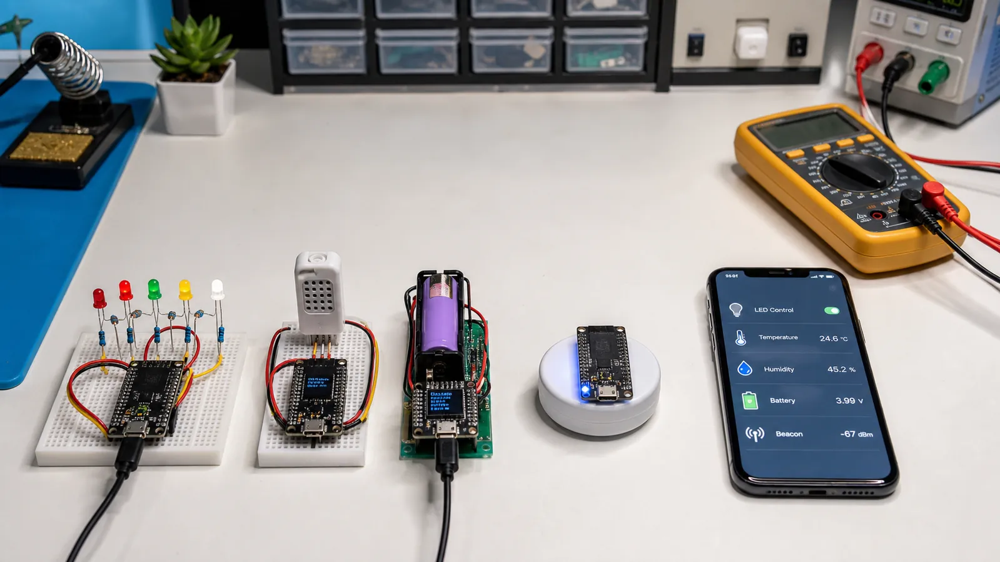

در پروژههای پایه هدف ساخت محصول کامل نیست؛ هدف این است که حلقه «سختافزار، GATT، موبایل و دیباگ» را چند بار با پیچیدگی کنترلشده طی کنید. هر پروژه باید یک خروجی قابل مشاهده و یک معیار موفقیت روشن داشته باشد.
یک Characteristic با Write بسازید و مقدار صفر یا یک را به GPIO تبدیل کنید. طول ورودی و مقدار مجاز را بررسی کنید. وضعیت واقعی LED را با Read یا Notify برگردانید تا برنامه موبایل فقط به فرمان ارسالی اعتماد نکند.
SHT31 را با I2C بخوانید، خطا و CRC سنسور را بررسی و داده را به عدد صحیح مقیاسدار تبدیل کنید. دو Characteristic یا یک Payload نسخهدار بسازید. Notify را فقط پس از فعالکردن CCCD و با نرخ منطقی بفرستید.
ولتاژ باتری را با تقسیم مقاومتی و ADC بخوانید و کالیبراسیون کنید. درصد باتری فقط تبدیل خطی ولتاژ نیست و به شیمی سلول و بار وابسته است. برای شروع Battery Service استاندارد با Level تقریبی کافی است؛ محدودیت تخمین را در UI بنویسید.
یک Advertising غیرقابل اتصال با شناسه و داده کوتاه بسازید. Interval و TX Power را تغییر دهید و اثر آن را روی RSSI و زمان کشف ثبت کنید. سپس با ابزار موبایل Service و Characteristic پروژههای متصل را بدون نوشتن اپ اختصاصی آزمایش کنید.
ابتدا LED را برای یادگیری Write بسازید. سپس دماسنج را برای Read و Notify اضافه کنید. بعد Battery Service و در پایان Beacon بدون اتصال را آزمایش کنید. برای هر پروژه Capture کوتاه و جدول خطا نگه دارید تا دانش مرحلههای قبل تثبیت شود.